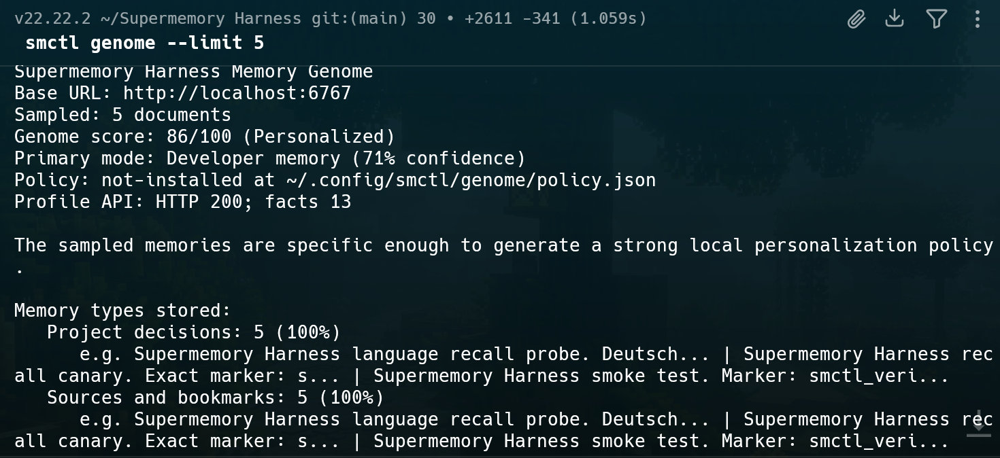

Users and agents
Beginners, Codex, Claude Code, Cursor, and local apps need memory status before trusting long-term context.
Harness wraps the private Supermemory Local engine with install flow, recall proof, trust scoring, repair guidance, project scoping, Guard-reviewed writes, Memory Genome personalization, and coding-agent lifecycle gates.
Supermemory Local gives the private memory engine. Harness gives users and agents the operational layer needed to know whether that memory is healthy, scoped, searchable, and safe to rely on right now.
Harness does not replace Supermemory Local. It talks to Local at localhost:6767, checks the real memory state, and gives users or agents the next safe action.
Beginners, Codex, Claude Code, Cursor, and local apps need memory status before trusting long-term context.
Install, verify, trust, repair, guard, personalize, migrate, and route agent decisions through a local command center.
The real local memory engine: embeddings, encrypted storage, documents, search, and recall stay on the user's machine.
The hosted page, GitHub README, and demo video all use the same proof path: install, dashboard, verify, trust, repair, personalization, and agent gates.
The first terminal run opens with a clear product banner and a next action instead of raw setup noise.

Harness runs beside the normal Supermemory Local dashboard so users can see memory health where they already work.

smctl verify proves the write and recall path before a user or agent relies on memory.

Trust checks and repair guidance make failed writes, scope drift, duplicate memories, and processing issues visible.

Harness learns what kinds of memories the user stores and creates a local policy for future memory behavior.

Run Harness from the same machine as Supermemory Local. The CLI stays local and uses Supermemory Local as the memory engine.
npm install -g supermemory-harness
smctl install
smctl supermemory start
smctl ui
smctl verify --timeout-ms 60000